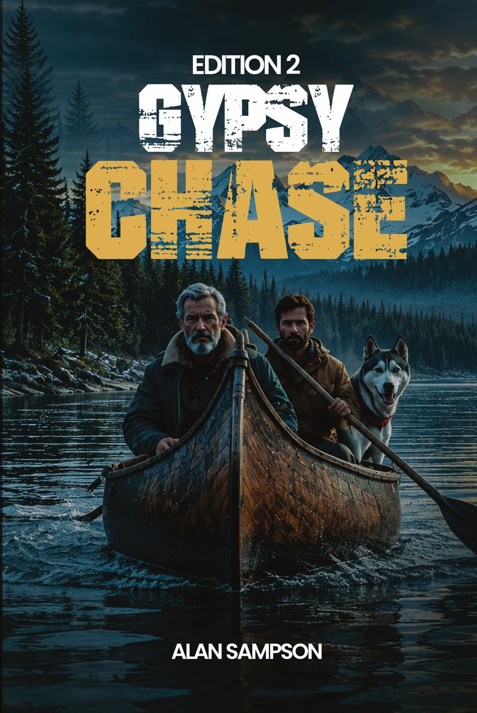
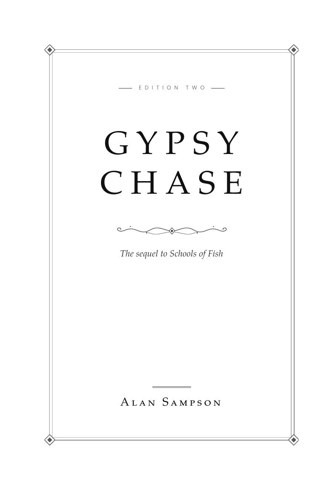
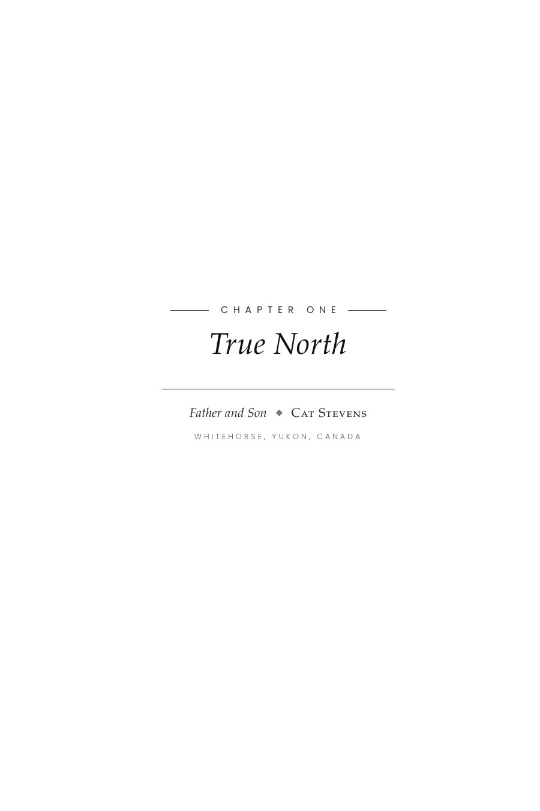
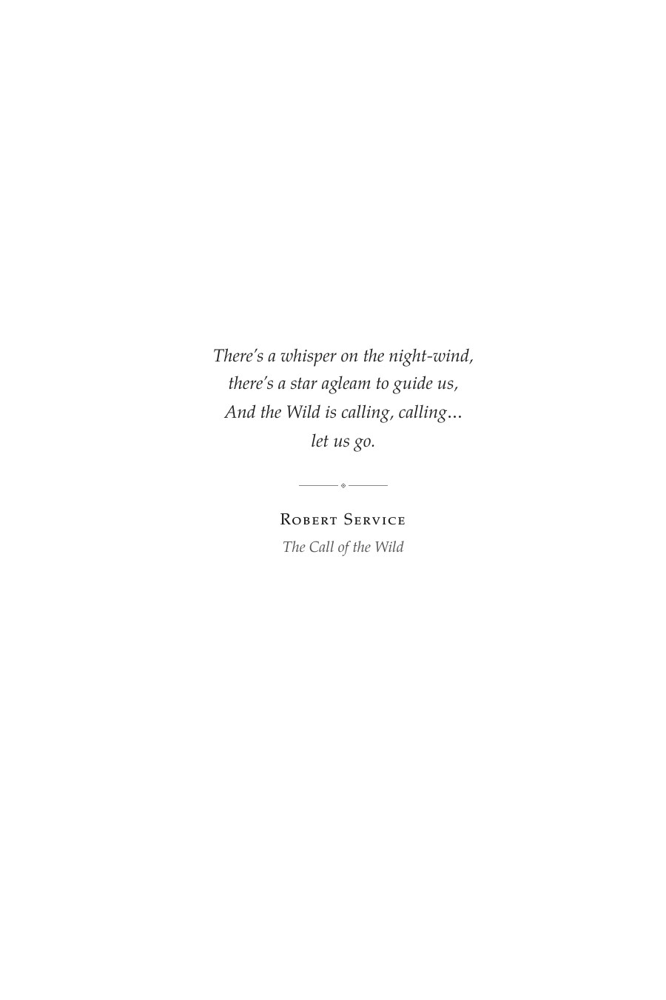

A TRUE STORY
Schools
of Fish
ALAN SAMPSONof Fish
Book 1 · Finch Memoir Prize winner
Schools of Fish
The prize-winning first book, where the Sampson family's story begins.
See on AmazonA runaway son. A father who won't stop looking. From the Yukon wilderness to the coast of Australia.

Greg Sampson is a runaway, escaping a controlling father's expectations and a world that wants him to conform.
His father follows him across the Yukon wilderness and all the way to Australia, determined to bring him back into line. On the way, the two of them face bears, criminals and their own inner demons.
By the end of the chase, neither man sees life, or love, the way he did when it began.
Every chapter in Gypsy Chase opens with a place. Here are a few of them.
“There's a whisper on the night-wind, there's a star agleam to guide us, And the Wild is calling, calling… let us go.”Robert Service · The Call of the Wild
A classic, elegant interior in 6 × 9 print, with chapter openers that tell you exactly where you are on the journey.



… and twelve more chapters, through to the Epilogue: Where They Are Now.
The prize-winning first book, where the Sampson family's story begins.
See on AmazonThe sequel. A father, a runaway son, and a chase from the Yukon to Australia. Now in paperback and hardcover.
Buy on AmazonGypsy Chase, Edition 2 is available on Amazon.